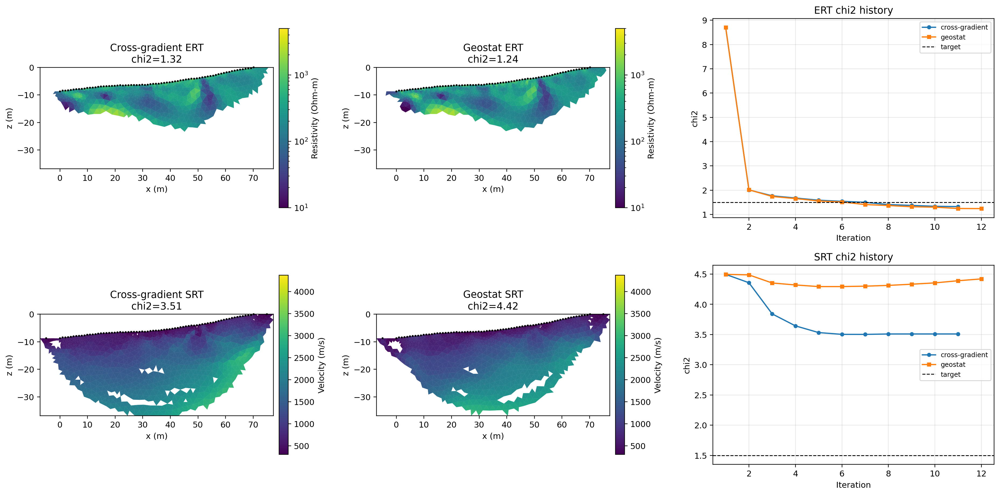

Note
Go to the end to download the full example code.
Joint ERT-SRT Inversion: Cross-Gradient and Geostatistical Coupling#
This example compares direct cross-gradient and geostatistical cross-gradient coupling using the same ERT and SRT field data. Data loading, shared settings, the two inversion runs, result saving, and visualization are presented as separate steps.
sphinx_gallery_thumbnail_path = ‘auto_examples/images/Ex_joint_inversion_fig_01.png’
import os
import sys
import numpy as np
import matplotlib.pyplot as plt
import pygimli as pg
import pygimli.physics.traveltime as tt
from pygimli.physics import ert
# Setup package path for development
try:
current_dir = os.path.dirname(os.path.abspath(__file__))
except NameError:
current_dir = os.getcwd()
if (
not os.path.exists(os.path.join(current_dir, "data"))
and os.path.exists(os.path.join(current_dir, "examples", "data"))
):
current_dir = os.path.join(current_dir, "examples")
parent_dir = os.path.dirname(current_dir)
if parent_dir not in sys.path:
sys.path.append(parent_dir)
from PyHydroGeophysX.inversion import JointERTSRTInversion
Load the ERT and SRT field data#
print("Step 1: Load the field datasets.")
output_dir = os.path.join(current_dir, "results", "joint_inversion_compare")
os.makedirs(output_dir, exist_ok=True)
ert_file = os.path.join(current_dir, "data", "ERT", "Bert", "fielddataline2.dat")
srt_file = os.path.join(current_dir, "data", "Seismic", "srtfieldline2.dat")
if not os.path.exists(ert_file):
raise FileNotFoundError(f"ERT file not found: {ert_file}")
if not os.path.exists(srt_file):
raise FileNotFoundError(f"SRT file not found: {srt_file}")
ert_data = ert.load(ert_file)
srt_data = tt.load(srt_file)
print(f"ERT: {ert_data.sensorCount()} sensors, {ert_data.size()} measurements")
print(f"SRT: {srt_data.sensorCount()} sensors, {srt_data.size()} travel times")
Run the direct cross-gradient inversion#
This case uses the model smoothness matrices to construct the cross-gradient coupling.
print("Step 3: Run the direct cross-gradient inversion.")
cross_params = {
**common_params,
"regularization_mode": "smoothness",
"lambda_ert": 10.0,
"lambda_srt": 10.0,
"lambda_cg_ert": 80.0,
"lambda_cg_srt": 80.0,
"cross_gradient_mode": "direct",
"cross_gradient_source": "smoothness",
"cross_gradient_threshold": 0.01,
}
cross_inv = JointERTSRTInversion(
ert_data=ert_file,
srt_data=srt_file,
**cross_params,
)
cross_result = cross_inv.run()
cross = {
"result": cross_result,
"params": cross_params,
"ert_model": np.asarray(cross_result.ert_resistivity, dtype=float).ravel(),
"srt_model": np.asarray(cross_result.srt_velocity, dtype=float).ravel(),
"chi2_ert_hist": np.asarray(
[iteration["chi2_ert"] for iteration in cross_result.iteration_history],
dtype=float,
),
"chi2_srt_hist": np.asarray(
[iteration["chi2_srt"] for iteration in cross_result.iteration_history],
dtype=float,
),
}
print(f"Final ERT chi2: {cross_result.chi2_ert:.4f}")
print(f"Final SRT chi2: {cross_result.chi2_srt:.4f}")
Run the geostatistical joint inversion#
This case uses continuous spatial covariance weights for the cross-gradient neighborhood.
print("Step 4: Run the geostatistical joint inversion.")
geo_params = {
**common_params,
"regularization_mode": "smoothness",
"lambda_ert": 10.0,
"lambda_srt": 10.0,
"lambda_cg_ert": 5000.0,
"lambda_cg_srt": 5000.0,
"cross_gradient_mode": "spatial",
"cross_gradient_source": "geostat",
"cross_gradient_corr_lengths": (4.0, 4.0),
"cross_gradient_threshold": 0.01,
}
geo_inv = JointERTSRTInversion(
ert_data=ert_file,
srt_data=srt_file,
**geo_params,
)
try:
geo_result = geo_inv.run()
except RuntimeError as exc:
if "GeostatisticConstraintsMatrix" in str(exc):
raise RuntimeError(
"Geostatistical constraints require a PyGIMLi build with "
"GeostatisticConstraintsMatrix support."
) from exc
raise
geo = {
"result": geo_result,
"params": geo_params,
"ert_model": np.asarray(geo_result.ert_resistivity, dtype=float).ravel(),
"srt_model": np.asarray(geo_result.srt_velocity, dtype=float).ravel(),
"chi2_ert_hist": np.asarray(
[iteration["chi2_ert"] for iteration in geo_result.iteration_history],
dtype=float,
),
"chi2_srt_hist": np.asarray(
[iteration["chi2_srt"] for iteration in geo_result.iteration_history],
dtype=float,
),
}
print(f"Final ERT chi2: {geo_result.chi2_ert:.4f}")
print(f"Final SRT chi2: {geo_result.chi2_srt:.4f}")
Save the inversion results#
Each case gets its own folder containing the recovered models, chi-square histories, and a text summary.
print("Step 5: Save the inversion results.")
run_outputs = {
"cross_gradient_joint": cross,
"geostat_joint": geo,
}
for case_name, output in run_outputs.items():
case_dir = os.path.join(output_dir, case_name)
os.makedirs(case_dir, exist_ok=True)
np.save(
os.path.join(case_dir, "joint_ert_resistivity.npy"),
output["ert_model"],
)
np.save(
os.path.join(case_dir, "joint_srt_velocity.npy"),
output["srt_model"],
)
np.save(
os.path.join(case_dir, "joint_ert_chi2_history.npy"),
output["chi2_ert_hist"],
)
np.save(
os.path.join(case_dir, "joint_srt_chi2_history.npy"),
output["chi2_srt_hist"],
)
summary_file = os.path.join(case_dir, "summary.txt")
with open(summary_file, "w", encoding="utf-8") as summary:
summary.write(f"Case: {case_name}\n")
summary.write(f"ERT file: {ert_file}\n")
summary.write(f"SRT file: {srt_file}\n")
summary.write(
f"Iterations: {len(output['result'].iteration_history)}\n"
)
summary.write(f"Final ERT chi2: {output['result'].chi2_ert:.6f}\n")
summary.write(f"Final SRT chi2: {output['result'].chi2_srt:.6f}\n")
summary.write("Parameters:\n")
for key in sorted(output["params"]):
summary.write(f" {key}: {output['params'][key]}\n")
print(f"Saved {case_name}: {case_dir}")
Compare the recovered ERT and SRT models#
The same color limits are used across the two coupling strategies. Coverage is applied as transparency to de-emphasize poorly constrained cells.
from palettable.lightbartlein.diverging import BlueDarkRed18_18
ert_cmap = "Spectral_r"
srt_cmap = BlueDarkRed18_18.mpl_colormap
ert_vmin = float(min(cross["ert_model"].min(), geo["ert_model"].min()))
ert_vmax = float(max(cross["ert_model"].max(), geo["ert_model"].max()))
srt_vmin = float(min(cross["srt_model"].min(), geo["srt_model"].min()))
srt_vmax = float(max(cross["srt_model"].max(), geo["srt_model"].max()))
cross_ert_cov = (
None
if cross_result.ert_coverage is None
else cross_result.ert_coverage > -1
)
geo_ert_cov = (
None
if geo_result.ert_coverage is None
else geo_result.ert_coverage > -1
)
cross_srt_cov = cross_result.srt_coverage
geo_srt_cov = geo_result.srt_coverage
fig, axes = plt.subplots(2, 3, figsize=(17, 8.5))
ert_panels = [
(
axes[0, 0],
cross_result,
cross["ert_model"],
cross_ert_cov,
f"Cross-gradient ERT\nchi2={cross_result.chi2_ert:.2f}",
),
(
axes[0, 1],
geo_result,
geo["ert_model"],
geo_ert_cov,
f"Geostat ERT\nchi2={geo_result.chi2_ert:.2f}",
),
]
for ax, result, model, coverage, title in ert_panels:
image = pg.viewer.mpl.drawModel(
ax,
result.mesh,
model,
cMap=ert_cmap,
cMin=ert_vmin,
cMax=ert_vmax,
logScale=True,
)
if coverage is not None:
pg.viewer.mpl.addCoverageAlpha(image, coverage)
colorbar = plt.colorbar(
image,
ax=ax,
orientation="vertical",
shrink=0.9,
pad=0.02,
)
colorbar.set_label("Resistivity (Ohm-m)")
pg.viewer.mpl.drawSensors(
ax,
ert_data.sensors(),
diam=0.4,
facecolor="k",
edgecolor="k",
)
ax.set_title(title)
ax.set_xlabel("x (m)")
ax.set_ylabel("z (m)")
axes[0, 2].plot(
np.arange(1, len(cross["chi2_ert_hist"]) + 1),
cross["chi2_ert_hist"],
"o-",
linewidth=1.5,
markersize=4,
label="cross-gradient",
)
axes[0, 2].plot(
np.arange(1, len(geo["chi2_ert_hist"]) + 1),
geo["chi2_ert_hist"],
"s-",
linewidth=1.5,
markersize=4,
label="geostat",
)
axes[0, 2].axhline(
common_params["target_chi2"],
color="k",
linestyle="--",
linewidth=1,
label="target",
)
axes[0, 2].set_title("ERT chi2 history")
axes[0, 2].set_xlabel("Iteration")
axes[0, 2].set_ylabel("chi2")
axes[0, 2].grid(alpha=0.3)
axes[0, 2].legend(loc="best", fontsize=8)
srt_panels = [
(
axes[1, 0],
cross_result,
cross["srt_model"],
cross_srt_cov,
f"Cross-gradient SRT\nchi2={cross_result.chi2_srt:.2f}",
),
(
axes[1, 1],
geo_result,
geo["srt_model"],
geo_srt_cov,
f"Geostat SRT\nchi2={geo_result.chi2_srt:.2f}",
),
]
for ax, result, model, coverage, title in srt_panels:
image = pg.viewer.mpl.drawModel(
ax,
result.mesh,
model,
cMap=srt_cmap,
cMin=srt_vmin,
cMax=srt_vmax,
logScale=False,
)
if coverage is not None:
pg.viewer.mpl.addCoverageAlpha(image, coverage)
colorbar = plt.colorbar(
image,
ax=ax,
orientation="vertical",
shrink=0.9,
pad=0.02,
)
colorbar.set_label("Velocity (m/s)")
pg.viewer.mpl.drawSensors(
ax,
srt_data.sensors(),
diam=0.4,
facecolor="k",
edgecolor="k",
)
ax.set_title(title)
ax.set_xlabel("x (m)")
ax.set_ylabel("z (m)")
axes[1, 2].plot(
np.arange(1, len(cross["chi2_srt_hist"]) + 1),
cross["chi2_srt_hist"],
"o-",
linewidth=1.5,
markersize=4,
label="cross-gradient",
)
axes[1, 2].plot(
np.arange(1, len(geo["chi2_srt_hist"]) + 1),
geo["chi2_srt_hist"],
"s-",
linewidth=1.5,
markersize=4,
label="geostat",
)
axes[1, 2].axhline(
common_params["target_chi2"],
color="k",
linestyle="--",
linewidth=1,
label="target",
)
axes[1, 2].set_title("SRT chi2 history")
axes[1, 2].set_xlabel("Iteration")
axes[1, 2].set_ylabel("chi2")
axes[1, 2].grid(alpha=0.3)
axes[1, 2].legend(loc="best", fontsize=8)
plt.tight_layout()
fig_path = os.path.join(output_dir, "Ex_joint_inversion_fig_01.png")
fig.savefig(fig_path, dpi=220, bbox_inches="tight")
plt.show()
The recovered models use common color limits, and the history panels show how each coupling strategy approaches the target chi-squared value.
{kind=link}

Write the comparison summary#
comparison_file = os.path.join(output_dir, "comparison_summary.txt")
with open(comparison_file, "w", encoding="utf-8") as summary:
summary.write("Joint inversion comparison\n")
summary.write("==========================\n")
for case_name, output in run_outputs.items():
summary.write(f"{case_name}\n")
summary.write(
f" final ERT chi2: {output['result'].chi2_ert:.6f}\n"
)
summary.write(
f" final SRT chi2: {output['result'].chi2_srt:.6f}\n"
)
summary.write(
f" iterations: {len(output['result'].iteration_history)}\n"
)
print("Comparison complete.")
print(
"Cross-gradient final chi2: "
f"ERT={cross_result.chi2_ert:.4f}, "
f"SRT={cross_result.chi2_srt:.4f}"
)
print(
"Geostatistical final chi2: "
f"ERT={geo_result.chi2_ert:.4f}, "
f"SRT={geo_result.chi2_srt:.4f}"
)
print(f"Saved comparison figure: {fig_path}")
print(f"Saved comparison summary: {comparison_file}")
print(f"Saved outputs to: {output_dir}")